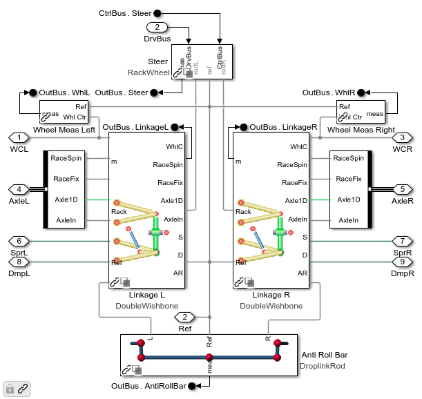
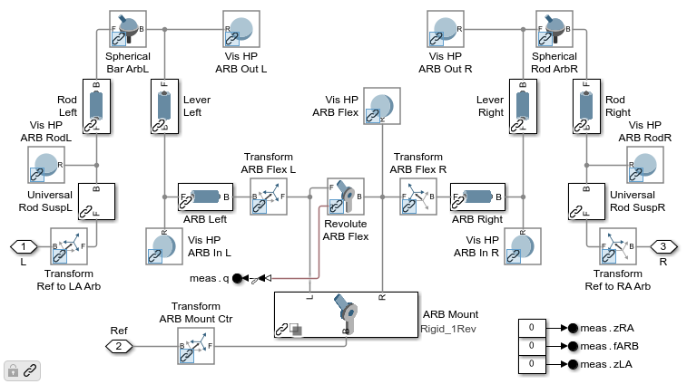
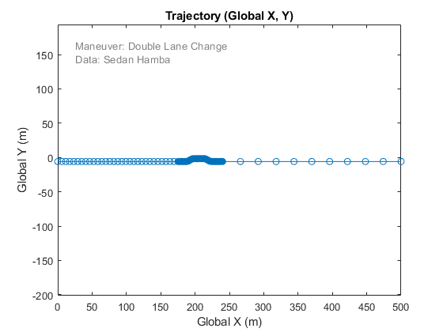
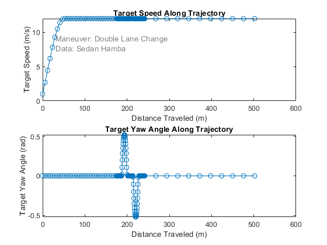
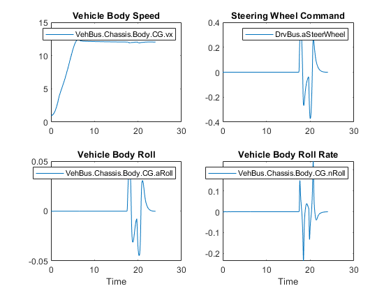
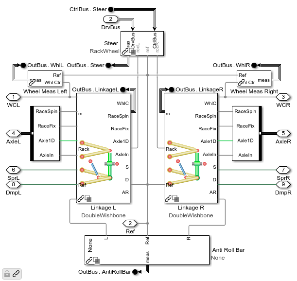
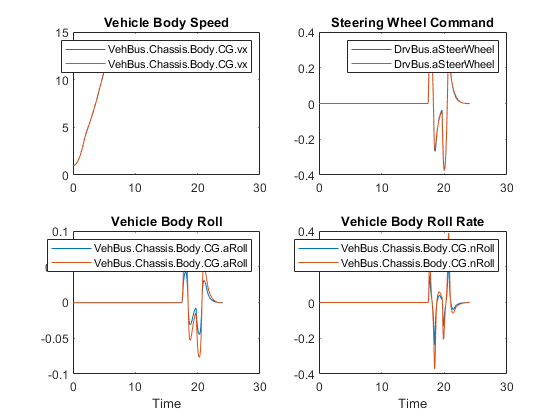

Configure Vehicle for Double Lane Change
The commands below run the vehicle through a double-lane change with two distinct vehicle configurations. The driver attempts to follow a specific trajectory (speed and yaw angle vs. x-y position). In one configuration we enable the anti-roll bar, in the other we disable it. The Simulink Data Inspector let us easily compare vehicle body measurements.
Contents
- Step 1: Open Model
- Step 2: Configure Model
- Step 3: Select Event
- Step 4: Run simulation with anti-roll bar active
- Step 5: Explore simulation results in Simulink Data Inspector
- Step 6: Remove anti-roll bar from front and rear of Vehicle data structure
- Step 7: Trigger model update to match Vehicle data structure
- Step 8: Run simulation with no anti-roll bar
- Step 9: Add simulation results to the Simulink Data Inspector
- Step 10: Add anti-roll bar to front and rear in Vehicle data structure
- Step 11: Trigger model update to match Vehicle data structure
Step 1: Open Model
This can be done from the MATLAB app, project shortcut, or MATLAB Command line.
mdl = 'sm_car';
open_system(mdl)
Step 2: Configure Model
This can be done from the MATLAB app or the MATLAB Command line. It involves loading a data structure into the MATLAB workspace that includes the desired vehicle model configuration and parameters
if verLessThan('matlab', '9.11') sm_car_load_vehicle_data(mdl,'139'); % MFeval tire else sm_car_load_vehicle_data(mdl,'189'); % Multibody tire, R21b and higher end
Note presence of anti-roll bar in model
open_system('sm_car/Vehicle/Vehicle/Chassis/SuspA1/Linkage','force');
See implementation of anti-roll bar
open_system('sm_car/Vehicle/Vehicle/Chassis/SuspA1/Linkage/Anti Roll Bar/Droplink','force');
Step 3: Select Event
This can be done from the MATLAB app or the MATLAB Command line. It configures the driver model for open/closed loop maneuvers and loads the necessary parameters into the MATLAB workspace.
The plot shows the actions the driver will take during this maneuver. You can produce this plot from the MATLAB app or the MATLAB Command line.
sm_car_config_maneuver('sm_car','Double Lane Change'); sm_car_plot_maneuver(Maneuver) 
Step 4: Run simulation with anti-roll bar active
This can be done from Simulink or from the MATLAB command line.
sim(mdl)
Step 5: Explore simulation results in Simulink Data Inspector
Use the Simulink Data Inspector to plot the following quantities.
sm_car_ex03_dlc_arb_plot1
Step 6: Remove anti-roll bar from front and rear of Vehicle data structure
This adjustment to the Vehicle data structure can be done via the MATLAB app or MATLAB Command Window. We are changing the configuration of the vehicle by changing fields in Vehicle that indicate if the anti-roll bar is present or not.
Vehicle = sm_car_vehcfg_setAntiRollBar(Vehicle,'None','SuspA1'); Vehicle = sm_car_vehcfg_setAntiRollBar(Vehicle,'None','SuspA2');
Step 7: Trigger model update to match Vehicle data structure
Changes to the Vehicle data structure need to be applied to the model. This process can be triggered by the MATLAB app or the MATLAB command line
sm_car_config_vehicle('sm_car');
Note that anti-roll bar has been removed
open_system('sm_car/Vehicle/Vehicle/Chassis/SuspA1/Linkage','force');
Step 8: Run simulation with no anti-roll bar
This can be done from Simulink or from the MATLAB command line.
sim(mdl)
Step 9: Add simulation results to the Simulink Data Inspector
Use the Simulink Data Inspector to plot the following quantities from the both runs.
sm_car_ex03_dlc_arb_plot2
Step 10: Add anti-roll bar to front and rear in Vehicle data structure
This adjustment to the Vehicle data structure can be done via the MATLAB app or MATLAB Command Window. We are changing the configuration of the vehicle by changing fields in Vehicle that indicate if the anti-roll bar is present or not.
Vehicle = sm_car_vehcfg_setAntiRollBar(Vehicle,'Droplink_Sedan_Hamba_f','SuspA1'); Vehicle = sm_car_vehcfg_setAntiRollBar(Vehicle,'Droplink_Sedan_Hamba_r','SuspA2');
Step 11: Trigger model update to match Vehicle data structure
Changes to the Vehicle data structure need to be applied to the model. This process can be triggered by the MATLAB app or the MATLAB command line
sm_car_config_vehicle('sm_car');
close all